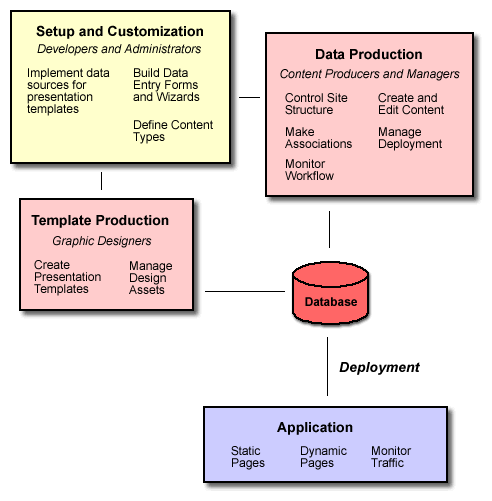

Briefly answer two questions:
What does this package do?
How can my business benefit from using it?
You may want to cut and paste from your requirements doc.
This document provides an overview of how CMS is typically deployed for a site with highly dynamic content and personalization.

CMS is designed to support content production without the regular intervention of a developer. Unless your publishing needs are extremely simple, however, a developer is required initially to set up and customize the system.
The first step in the production process is to define the types of content that are relevant to a particular application. Examples of content types include Press Releases, News Stories, Images, and Product Reviews. A content type definition specifies what kinds of data may be associated with a content item of that type. This includes simple attributes, such as author, summary text, SKU number, etc., as well as valid associations with other content items, such as between news stories and images or graphics.
Successful deployment of any content management system requires careful anticipation of the needs of the entire publishing team, including content producers, managers and any number of other staffpersons across the organization who may be monitoring the production and deployment process. The system must provide each class of users with an interface this is both intuitive and robust enough to provide access to all necessary functions.
CMS includes a generic user interface designed to meet the basic needs of the majority of publishing teams. In recognition of the uniqueness of each organization, it is implemented in a highly modular fashion that simplifies the task of assembling customized interfaces. Common examples of customization include:
Simplified browsing interfaces that organize content in a manner specific to a particular content type or categorization scheme.
Information display panels that emphasize what is most important or appropriate for the particular production context.
Data entry forms and "wizards" to guide producers through a specific task or related set of tasks.
Search pages tailored to the attributes of a specific set of content types.
In addition to implementing an appropriate interface for managing your content internally, you must implement templates that specify how content is presented to the public as part of your application. A presentation template is an HTML document with special placeholders indicating where content should be inserted, much like the templates used in a word processor to generate a form letter or other standard document. The implementation of presentation templates is typically a collaborative effort among publisher, developer and designer. The process is typically as follows:
You decide what information you want to present on a page. For example, "This page has a news story as its centerpiece. On the marging there is a list of related stories. The page may also include one or two images."
The developer implements the database queries to extract the appropriate content from the database and make it available for merging with the template. The developer may write a skeletal HTML layout for the purpose of testing the queries.
The designer implements a layout for the page in HTML, possibly based on the skeleton provided by the developer. The initial draft may be a mockup for illustration purposes only.
The designer uses the documentation provided by the deveoper to insert variable names in their proper position in the layout.
The developer and designer test the template with actual data and revise as necessary.
Data production is the everyday process by which producers enter content into the system, and managers edit, approve and deploy content to the public site.
CMS can coexist with your public server infrastructure in a variety of ways, ranging from total indepedence to tight integration.
Static content consists of pages that, once published, do not change unless edited manually. Examples of static content typically include Press Releases and News Stories. At the time of deployment, CMS can merge content with a presentation template and write it to the file system as a static HTML file. Your public server infrastructure can then deliver these pages to users without any further processing.
Dynamic content consists of pages that are constantly changing as new content is deployed. These are typically "top-level" or summary pages that provide links to actual content. These pages must stay up-to-date without manual editing or intervention. For dynamic pages, you can query the content repository directly to ensure that the latest available content is always listed. Depending on your public server infrastructure, you may opt to cache this information and refresh it at regular brief intervals, rather than performing database queries for each user request.
Personalized pages are by necessity highly dynamic. As such, they invariably need to query the content repository directly to retrieve content appropropriate for the user who is making the request.
Monitoring usage trends is a critical final element to the production process. Publishers must continually adjust their content output to adapt to predominant user interests. Actual logging and reporting of user traffic is dependent on your public server infrastructure.
Last revised: $Id$